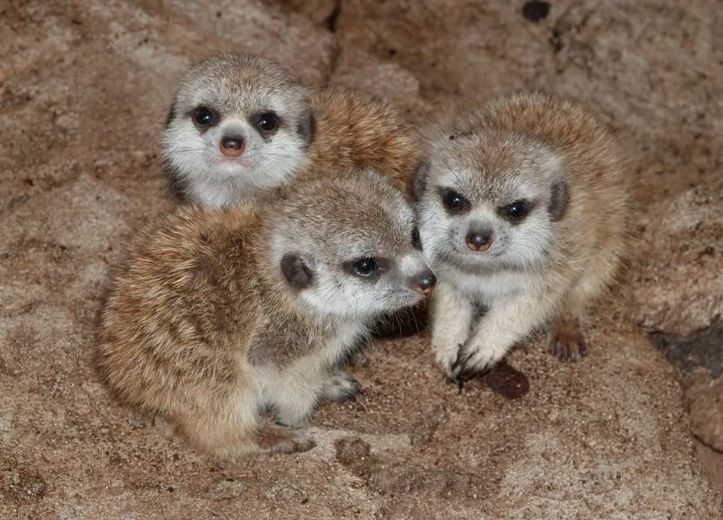

哺乳动物 · 动物界
狐獴 Suricata suricatta

非洲南部的群居獴类，直立站岗、轮流放哨，群体分工合作照顾幼仔，以昆虫和小型脊椎动物为食，善挖洞穴。
- 分类
- 门脊索动物门纲哺乳纲目食肉目科獴科属狐獴属
- 栖息环境
- 非洲南部的干旱草原、稀树草原与半荒漠
- 地理分布
- 博茨瓦纳、纳米比亚、南非及安哥拉南部的干旱地区
- 保护级别
- IUCN 无危（LC）
物种志
狐獴体长 0.25–0.35 米，尾长 0.19–0.25 米，体重 0.6–1 kg。它的体形细长，被毛为浅黄至灰褐色，背部有深色横纹，眼周有深色斑块，耳朵小而圆，尾巴细长、末端黑色；四肢短而有力，前爪弯曲，适合挖掘。
狐獴分布于非洲南部的博茨瓦纳、纳米比亚、南非和安哥拉，栖息于干旱草原、稀树草原和半荒漠。它结成 5–40 只的群体，成员分工明确：有个体直立站岗放哨，发现猛禽或蛇时发出不同警报声；其余成员觅食或照顾幼仔，群体内常有多只成年个体共同抚育幼崽。狐獴以昆虫、蝎子、蜥蜴、蛇、鸟类和果实为食，对部分蝎毒有一定耐受性。雌性妊娠期约 60–70 天，每胎 2–5 仔。狐獴种群总体稳定，被列为无危。
形态与习性
- 食性昆虫、蝎子、蜥蜴、蛇、鸟类与果实
- 体长0.25–0.35 m，尾长 0.19–0.25 m
- 体重0.6–1 kg
- 寿命野外约 8–10 年
- 繁殖妊娠期约 60–70 天，每胎 2–5 仔
- 社会结构5–40 只的群体，分工合作，有哨兵放哨
- 能力对部分蝎毒有一定耐受性
趣味知识
- 狐獴群体会轮流直立站岗，发现天敌时发出不同警报声。
- 狐獴对蝎子的毒液有一定耐受性，会把蝎子作为食物。
- 群体中多只成年个体会共同抚育幼崽。
- 狐獴用前爪挖出复杂的洞穴系统，多个出口便于逃生。